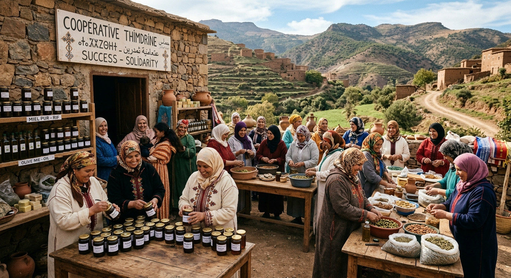

Notre histoire

Tout a commencé avec quelques femmes, des moyens simples et un grand rêve : préserver les traditions du Rif et valoriser les richesses de notre terre. Malgré les difficultés, elles ont continué à avancer ensemble. Aujourd’hui, 25 femmes partagent cette même passion et font vivre leur savoir-faire à travers des produits authentiques et naturels.
Découvrez la suite de notre histoireNotre emplacement
Nos produits phares

Miel naturel
Miel naturel des montagnes du Rif, récolté avec soin pour préserver sa pureté et sa richesse en goût.
199 Dh
Achetez maintenant
Huile d’olive
Huile d’olive naturelle du Rif, extraite avec soin pour préserver sa richesse, sa fraîcheur et son goût authentique.
199 Dh
Achetez maintenant
Amlou
Amlou traditionnel marocain, préparé à base d’amandes, d’huile d’argan et de miel. Une spécialité riche